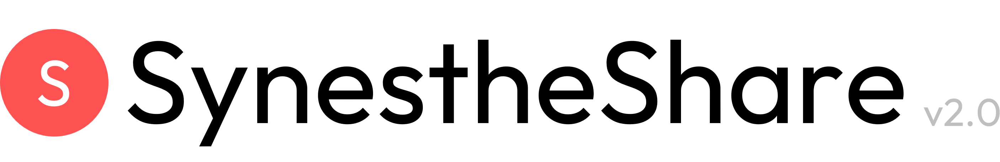

使い方
テーマ
共感覚とは
今すぐ診断
Color Synesthesia
あなたの
A
は
何
色
ですか？
文字や数字に「色」を感じる——
それが共感覚。
直感で色を選ぶだけ。
世界中の人と比べてみよう。
2分で今すぐ診断 →
Scroll
使い方
4ステップ、
2分
で
完成
🎯
Step 01
テーマを
選ぶ
アルファベット・数字・
教科など
4種類から選ぼう
🎨
Step 02
色を
割り当てる
「Aは赤」など
直感で選ぶだけ。
全部でなくてもOK
📊
Step 03
みんなと
比べる
多数派・少数派が
すぐわかる
グラフを確認
📤
Step 04
SNSで
シェア
ワンタップで
結果を投稿
テーマ選択
テーマ
を選んで
診断開始！
No. 01
人気
A
B
C
アルファベット
A〜Zは
どんな色？
→
No. 02
1
2
3
数字
1〜9は
どんな色？
→
No. 03
あ
い
う
ひらがな
あ～おは
どんな色？
→
No. 04
国
数
理
教科
国語や数学は
どんな色？
→
共感覚とは？
思ったより
身近
な
感覚
🔴
A = 赤
最も多い
回答
多くの人がAに
赤系を感じる
傾向があります
👥
〜4%
色字共感覚を
持つ人数
100人に1〜4人。
思ったより身近な
感覚です
🌈
無限大∞
組み合わせの
数
まったく同じ共感覚を
持つ人は
2人といません
さあ、
診断
して
みよう
あなただけの
共感覚カラーを
発見しよう。
2分で今すぐ診断 →